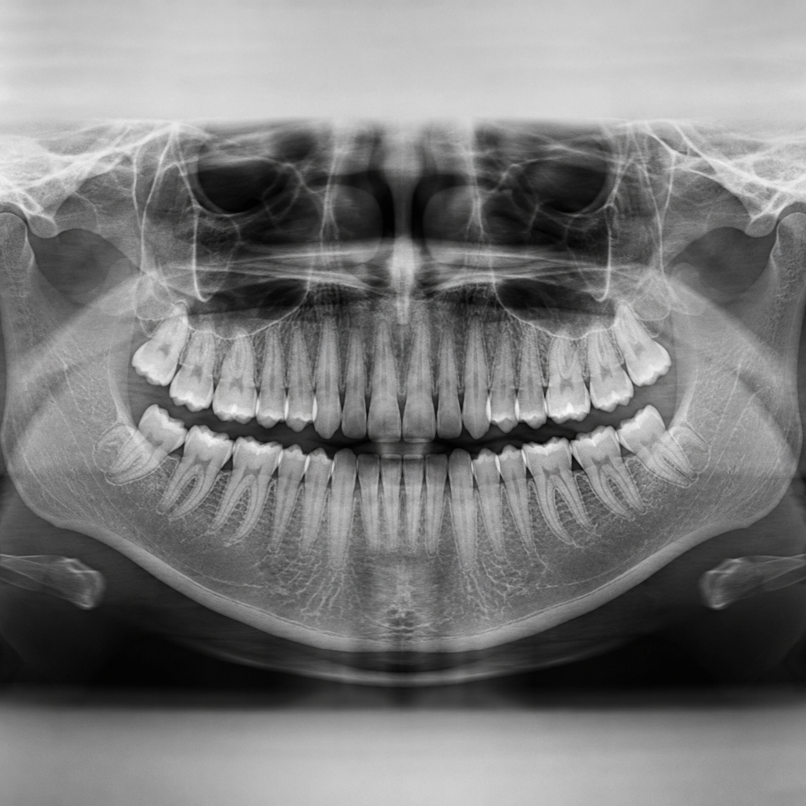

Root Canal Treatment Cost in Kanyakumari — What to Expect
A transparent breakdown of what affects root canal treatment cost in Kanyakumari, and why our pricing stays reasonable.

Invisalign vs Traditional Braces: Which Suits You?
A clear comparison of clip braces and Invisalign from Kanyakumari's pioneer Invisalign provider.

5 Aftercare Tips Following Dental Implant Surgery
Simple habits to protect your investment, from the best dental implant clinic in Kanyakumari.

Breaking Thumb-Sucking & Mouth-Breathing Habits Early
Why early intervention from a pediatric dentist in Kanyakumari prevents bigger orthodontic issues later.

Veneers 101: Your Fast-Track Smile Makeover
How porcelain veneers fix gaps, staining and chipped teeth — a popular choice among Kanyakumari patients.

Planning Dental Treatment in Kanyakumari from Abroad
A practical guide for NRIs and overseas patients combining quality treatment with a trip home.

OPG and CBCT Dental Scans: Why 3D Imaging Matters
Discover how OPG and 3D CBCT scans have revolutionized modern dental diagnostics, implant planning, and orthodontic care.

Complete Dentures vs. Implant-Supported Overdentures
Compare traditional removable dentures with modern implant-supported restorations to find your best teeth replacement choice.

The Importance of Professional Scaling: Ultrasonic Cleaning
Learn how professional ultrasonic teeth cleaning sweeps away deep plaque and tartar build-up to protect your gum health.

Dental Bridges vs. Implants: Restoring Your Chewing Smile
Understand the structural difference, durability, and cost of dental bridges compared to implants.

Deciding on Metal vs Ceramic Orthodontic Braces
Compare the visibility, durability, and alignment speed of classic metal braces and discreet ceramic options.

How Modern Composite Tooth Fillings Save Decayed Teeth
Say goodbye to silver fillings. Discover how tooth-colored composite resins restore health and aesthetics.